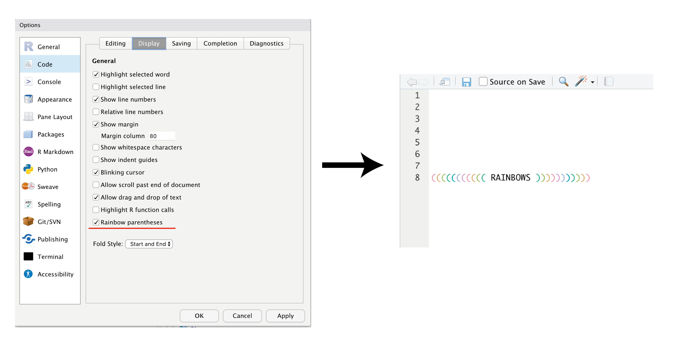

Use the same prefix for all outputs from that script (e.g. graphs, datasets)
# Comment your scripts. ⌘ + ⇧ + C / crtl + ⇧ + C is your friend
“In every project you have at least one other collaborator: future-you. You don’t want future-you to curse past-you”Hadley Wickham
‚ÄúIf the first line of your R script is setwd("C:\Jenny\path\that\only\I\have") I will come into your office and SET YOUR COMPUTER ON FIRE üî•.‚Äù Jenny Bryan
‚ÄúIf the first line of your R script is rm(list = ls()) I will come into your office and SET YOUR COMPUTER ON FIRE üî•.‚Äù Jenny Bryan
Project management: (3) Projects
Hard-wired absolute paths do not travel well (time and space)
You change a folder and all the code breaks!
Code only runs on your machine, not on mine!
Switching between projects becomes tedious
rm(list = ls()) does not eliminate everything üëé
To RESTART R is a better solution üëç
Project management: (3) Projects
And while we’re there: 
Project management: (3) Projects
Automatically sets the working directory for Project A to Project A
Makes switching from Project A to Project B very easy
All paths are relative by default
You can work simultaneously on ≥ 1 project
Project management: (3) Projects
Let’s setup a new project together.
For more details on “Project-oriented” workflows, see Jenny Bryans excellent website:
who_dat %>%filter(country %in%c("Germany", "United States of America", "Brazil", "Afghanistan")) %>%group_by(country, year) %>%summarise(n =sum(value)) %>%ggplot(aes(x = year, y = n)) +geom_line(aes(color = country), size =1) +geom_point(aes(color = country), shape =21, fill ="white", size =3) +facet_wrap(~country, scales ="free_y") +labs(x ="Year", y ="N of pulmonary TB cases", color ="Country", caption ="Data Source: Global Tuberculosis Report") +theme_minimal() +theme(legend.position ="None")
Dplyr basics:
filter(): pick observations by their values
select(): pick variables by their names
arrange(): reorder the rows
mutate(): create new variables with functions of existing variables
summarise(): collapse many values down to a single summary
Let’s look at the TB data again
who_dat
# A tibble: 6,382 × 8
country iso2 iso3 year diag gender agegroup value
<chr> <chr> <chr> <int> <chr> <chr> <chr> <int>
1 Afghanistan AF AFG 1997 sputum smear m 0-14 yrs 0
2 Afghanistan AF AFG 1997 sputum smear m 15-24 yrs 10
3 Afghanistan AF AFG 1998 sputum smear m 0-14 yrs 30
4 Afghanistan AF AFG 1998 sputum smear m 15-24 yrs 129
5 Afghanistan AF AFG 1999 sputum smear m 0-14 yrs 8
6 Afghanistan AF AFG 1999 sputum smear m 15-24 yrs 55
7 Afghanistan AF AFG 2000 sputum smear m 0-14 yrs 52
8 Afghanistan AF AFG 2000 sputum smear m 15-24 yrs 228
9 Afghanistan AF AFG 2001 sputum smear m 0-14 yrs 129
10 Afghanistan AF AFG 2001 sputum smear m 15-24 yrs 379
# … with 6,372 more rows
Pipe operator
Shortcut: ⌘ + ⇧ + M / crtl + ⇧ + M
You can think of it as “…and then…”.
Pipe operator
who_dat %>%filter(country =="Brazil") %>%head(1)
# A tibble: 1 × 8
country iso2 iso3 year diag gender agegroup value
<chr> <chr> <chr> <int> <chr> <chr> <chr> <int>
1 Brazil BR BRA 1999 sputum smear m 0-14 yrs 301
üòè
head(filter(who_dat, country =="Brazil"), 1)
# A tibble: 1 × 8
country iso2 iso3 year diag gender agegroup value
<chr> <chr> <chr> <int> <chr> <chr> <chr> <int>
1 Brazil BR BRA 1999 sputum smear m 0-14 yrs 301
# A tibble: 28 × 8
country iso2 iso3 year diag gender agegroup value
<chr> <chr> <chr> <int> <chr> <chr> <chr> <int>
1 Brazil BR BRA 1999 sputum smear m 0-14 yrs 301
2 Brazil BR BRA 1999 sputum smear m 15-24 yrs 3662
3 Brazil BR BRA 2000 sputum smear m 0-14 yrs 1894
4 Brazil BR BRA 2000 sputum smear m 15-24 yrs 7268
5 Brazil BR BRA 2001 sputum smear m 0-14 yrs 468
6 Brazil BR BRA 2001 sputum smear m 15-24 yrs 4455
7 Brazil BR BRA 2002 sputum smear m 0-14 yrs 344
8 Brazil BR BRA 2002 sputum smear m 15-24 yrs 4695
9 Brazil BR BRA 2003 sputum smear m 0-14 yrs 382
10 Brazil BR BRA 2003 sputum smear m 15-24 yrs 4485
# … with 18 more rows
# A tibble: 28 × 6
country year diag gender agegroup value
<chr> <int> <chr> <chr> <chr> <int>
1 Brazil 1999 sputum smear m 0-14 yrs 301
2 Brazil 1999 sputum smear m 15-24 yrs 3662
3 Brazil 2000 sputum smear m 0-14 yrs 1894
4 Brazil 2000 sputum smear m 15-24 yrs 7268
5 Brazil 2001 sputum smear m 0-14 yrs 468
6 Brazil 2001 sputum smear m 15-24 yrs 4455
7 Brazil 2002 sputum smear m 0-14 yrs 344
8 Brazil 2002 sputum smear m 15-24 yrs 4695
9 Brazil 2003 sputum smear m 0-14 yrs 382
10 Brazil 2003 sputum smear m 15-24 yrs 4485
# … with 18 more rows
# You could also use select(-c(iso2, iso3))
Useful “helpers” with select: starts_with(), contains()
# A tibble: 28 × 6
country year diag gender agegroup value
<chr> <int> <chr> <chr> <chr> <int>
1 Brazil 2012 sputum smear m 0-14 yrs 277
2 Brazil 2008 sputum smear m 0-14 yrs 298
3 Brazil 2010 sputum smear m 0-14 yrs 298
4 Brazil 1999 sputum smear m 0-14 yrs 301
5 Brazil 2005 sputum smear m 0-14 yrs 317
6 Brazil 2009 sputum smear m 0-14 yrs 328
7 Brazil 2011 sputum smear m 0-14 yrs 336
8 Brazil 2004 sputum smear m 0-14 yrs 337
9 Brazil 2006 sputum smear m 0-14 yrs 343
10 Brazil 2002 sputum smear m 0-14 yrs 344
# … with 18 more rows
# A tibble: 28 × 6
country year diag gender agegroup value
<chr> <int> <chr> <chr> <chr> <int>
1 Brazil 2000 sputum smear m 15-24 yrs 7268
2 Brazil 2005 sputum smear m 15-24 yrs 5074
3 Brazil 2004 sputum smear m 15-24 yrs 5041
4 Brazil 2012 sputum smear m 15-24 yrs 5027
5 Brazil 2011 sputum smear m 15-24 yrs 4877
6 Brazil 2006 sputum smear m 15-24 yrs 4783
7 Brazil 2002 sputum smear m 15-24 yrs 4695
8 Brazil 2009 sputum smear m 15-24 yrs 4621
9 Brazil 2003 sputum smear m 15-24 yrs 4485
10 Brazil 2001 sputum smear m 15-24 yrs 4455
# … with 18 more rows
# A tibble: 28 × 7
country year diag gender agegroup value total_n_cases
<chr> <int> <chr> <chr> <chr> <int> <int>
1 Brazil 1999 sputum smear m 0-14 yrs 301 73522
2 Brazil 1999 sputum smear m 15-24 yrs 3662 73522
3 Brazil 2000 sputum smear m 0-14 yrs 1894 73522
4 Brazil 2000 sputum smear m 15-24 yrs 7268 73522
5 Brazil 2001 sputum smear m 0-14 yrs 468 73522
6 Brazil 2001 sputum smear m 15-24 yrs 4455 73522
7 Brazil 2002 sputum smear m 0-14 yrs 344 73522
8 Brazil 2002 sputum smear m 15-24 yrs 4695 73522
9 Brazil 2003 sputum smear m 0-14 yrs 382 73522
10 Brazil 2003 sputum smear m 15-24 yrs 4485 73522
# … with 18 more rows
# A tibble: 28 × 7
country year diag gender agegroup value mean_n_cases
<chr> <int> <chr> <chr> <chr> <int> <dbl>
1 Brazil 1999 sputum smear m 0-14 yrs 301 2626.
2 Brazil 1999 sputum smear m 15-24 yrs 3662 2626.
3 Brazil 2000 sputum smear m 0-14 yrs 1894 2626.
4 Brazil 2000 sputum smear m 15-24 yrs 7268 2626.
5 Brazil 2001 sputum smear m 0-14 yrs 468 2626.
6 Brazil 2001 sputum smear m 15-24 yrs 4455 2626.
7 Brazil 2002 sputum smear m 0-14 yrs 344 2626.
8 Brazil 2002 sputum smear m 15-24 yrs 4695 2626.
9 Brazil 2003 sputum smear m 0-14 yrs 382 2626.
10 Brazil 2003 sputum smear m 15-24 yrs 4485 2626.
# … with 18 more rows
# A tibble: 2 × 2
country total_n_cases
<chr> <int>
1 Brazil 73522
2 Germany 1597
summarise(): collapse values to a single one
who_dat %>%filter(country %in%c("Brazil", "Germany")) %>%select(-c(iso2, iso3)) %>%group_by(country, year) %>%summarise(total_n_cases =sum(value)) %>%print(n =31) # So that all rows are shown to us
# A tibble: 31 × 3
# Groups: country [2]
country year total_n_cases
<chr> <int> <int>
1 Brazil 1999 3963
2 Brazil 2000 9162
3 Brazil 2001 4923
4 Brazil 2002 5039
5 Brazil 2003 4867
6 Brazil 2004 5378
7 Brazil 2005 5391
8 Brazil 2006 5126
9 Brazil 2007 4770
10 Brazil 2008 4734
11 Brazil 2009 4949
12 Brazil 2010 4703
13 Brazil 2011 5213
14 Brazil 2012 5304
15 Germany 1995 193
16 Germany 1996 201
17 Germany 1997 177
18 Germany 1998 188
19 Germany 1999 158
20 Germany 2001 6
21 Germany 2002 37
22 Germany 2003 70
23 Germany 2004 68
24 Germany 2005 65
25 Germany 2006 80
26 Germany 2007 118
27 Germany 2008 42
28 Germany 2009 50
29 Germany 2010 50
30 Germany 2011 43
31 Germany 2012 51
# A tibble: 182 × 2
country tb_cases
<chr> <int>
1 Afghanistan 1042
2 Albania 19
3 Algeria 1483
4 Angola 3308
5 Antigua and Barbuda 0
6 Argentina 733
7 Armenia 82
8 Australia 33
9 Austria 13
10 Bahamas 3
# … with 172 more rows
Now we can join the 2 datasets together…
data07 <- tb07 %>%left_join(pop07)data07
# A tibble: 182 × 7
country tb_cases continent year lifeExp pop gdpPercap
<chr> <int> <fct> <int> <dbl> <int> <dbl>
1 Afghanistan 1042 Asia 2007 43.8 31889923 975.
2 Albania 19 Europe 2007 76.4 3600523 5937.
3 Algeria 1483 Africa 2007 72.3 33333216 6223.
4 Angola 3308 Africa 2007 42.7 12420476 4797.
5 Antigua and Barbuda 0 <NA> NA NA NA NA
6 Argentina 733 Americas 2007 75.3 40301927 12779.
7 Armenia 82 <NA> NA NA NA NA
8 Australia 33 Oceania 2007 81.2 20434176 34435.
9 Austria 13 Europe 2007 79.8 8199783 36126.
10 Bahamas 3 <NA> NA NA NA NA
# … with 172 more rows
…and calculate the TB incidence per 100’000 persons.
data07 <- data07 %>%select(-lifeExp, -gdpPercap) %>%# We don't need those 2 variablesmutate(tb_incidence = tb_cases / pop *100000) %>%filter(!is.na(tb_incidence))data07
# A tibble: 113 × 6
country tb_cases continent year pop tb_incidence
<chr> <int> <fct> <int> <int> <dbl>
1 Afghanistan 1042 Asia 2007 31889923 3.27
2 Albania 19 Europe 2007 3600523 0.528
3 Algeria 1483 Africa 2007 33333216 4.45
4 Angola 3308 Africa 2007 12420476 26.6
5 Argentina 733 Americas 2007 40301927 1.82
6 Australia 33 Oceania 2007 20434176 0.161
7 Austria 13 Europe 2007 8199783 0.159
8 Bahrain 8 Asia 2007 708573 1.13
9 Bangladesh 10733 Asia 2007 150448339 7.13
10 Belgium 25 Europe 2007 10392226 0.241
# … with 103 more rows
Show the code
data07 %>%ggplot(aes(y = country, x = tb_incidence)) +geom_point() +labs(x ="Pulmonary TB, Incidence per 100'000 people (in 2007)", y ="Counry", caption ="WHO TB report") +theme_minimal()
Show the code
data07 %>%mutate(country =fct_reorder(country, tb_incidence)) %>%ggplot(aes(y = country, x = tb_incidence)) +geom_point() +scale_x_log10() +labs(x ="Pulmonary TB, TB Incidence per 100'000 people (in 2007)", y ="Counry", caption ="WHO TB report") +theme_minimal()
Show the code
data07 %>%mutate(country =fct_reorder(country, tb_incidence)) %>%ggplot(aes(y = country, x = tb_incidence)) +geom_point(aes(color = continent)) +scale_x_log10() +scale_y_discrete(guide =guide_axis(check.overlap =TRUE)) +labs(x ="Pulmonary TB, Incidence per 100'000 people (in 2007)", y ="Counry", caption ="WHO TB report", color =NULL) +theme_minimal()
For those who are surprised about the low incidence:
Remeber our TB dataset only includes new lung-TB cases of men <25 years:
who_dat %>%count(gender, agegroup)
# A tibble: 2 × 3
gender agegroup n
<chr> <chr> <int>
1 m 0-14 yrs 3173
2 m 15-24 yrs 3209
Joining datasets together
left_join() keeps all observations in x.
right_join() keeps all observations in y.
full_join() keeps all observations in x and y.
Factors
Factors help you to organize characters in the way you want. If you don’t mind the order, you don’t need factors. I use them mainly for: